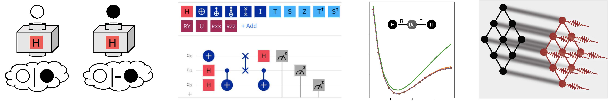

VTQ Education

Undergraduate QISE Minor Program
In 2022, VTQ established a new minor degree in QISE. This degree, which is among the first of its kind in the United States, brings together 7 departments and degree programs from the Colleges of Science and Engineering, including Chemistry, Computational Modeling and Data Analytics, Computer Science, Electrical and Computer Engineering, Materials Science, Mathematics, and Physics. It was created in response to a rapidly growing need to strengthen the QISE workforce, as has been recognized in bills recently put forward in the US Congress, including the National Quantum Initiative Act (passed into law Dec. 2018), the Quantum Network Infrastructure and Workforce Development Act (introduced April 2021), and the Quantum for Universal Advancement in Nationwide Technology Use and Modernization (QUANTUM) for National Security Act (introduced in April 2021). Students partaking in the minor take four mandatory courses that introduce the background knowledge and basic skills required of all QISE researchers. In addition, they choose from among a small set of upper-level courses. All remaining courses can be taken within the students’ home departments, facilitating compatibility with their majors and allowing them to specialize in various aspects of QISE, which is currently one of the most interdisciplinary fields in science and engineering. Details about the core courses are given below. More information about the minor, along with a course checksheet, can be found on the QISE minor webpage.Core Courses:
-
Hello Quantum World! (PHYS 2254):
This is a first- or second-year undergraduate course that provides students with a first introduction to QISE. This is done using a rigorous pictorial framework that allows students to grasp the central concepts and perform real calculations without the need for advanced mathematics such as linear algebra, which is normally a prerequisite for courses on quantum mechanics. Students also make extensive use of cloud quantum computers and simulators via the IBM Quantum Composer. Hello Quantum World! takes an application-first approach to introducing QISE that can help motivate students to take advanced courses in linear algebra, quantum mechanics, and QISE in later years. In addition to homeworks, students work through longer-term projects in teams. For example, one project is to figure out how quantum teleportation works, while another is to uncover the mechanism behind Grover’s algorithm (disguised as a puzzle called Money or Tigers) step by step. More details about the course can be found in this arXiv preprint.
-
Quantum Software I&II (CHEM/PHYS 3684/4684):
It is important that students interested in QISE research develop the practical skills necessary to contribute to new quantum information technologies. The set of necessary skills extends beyond fluency in a programming language and algorithm design, and now involves proficiency in a number of toolchain and workflow patterns. Quantum Software I equips students with this additional know-how, preparing them not only for research in academia, but also for positions in government labs and industry. This is important given that many of the leading companies and labs (Google, IBM, Lockheed Martin, Northrop Grumman, Army Research Laboratory, National Institute of Standards and Technology, etc.) have active research programs related to QISE. Quantum Software II provides an opportunity for senior students to bring together domain problems with software development experience to work on projects that will prepare them for academic, industrial, or national laboratory research experiences.
-
Quantum Information Technologies (PHYS 4264):
This senior-level course introduces the basics of quantum computing and other quantum information technologies at a mathematically rigorous level without assuming prior knowledge of quantum mechanics. A strong familiarity with linear algebra is required. The course covers topics such as the differences between bits and qubits, quantum logic gates, the concept of entanglement, quantum teleportation, quantum cryptography and key distribution, quantum computing algorithms, including the Deutsch-Jozsa algorithm, Grover’s search algorithm, and Shor’s factoring algorithm. Additional topics are also covered, such as the basics of public-key cryptosystems and number theory as needed to understand Shor’s algorithm. The role of errors in quantum computers and the basics of quantum error correction are introduced as well. This course establishes the core background needed for any type of QISE research.
-
Quantum Optics and Qubit Processors (PHYS 4264/5264):
This is a course that introduces students to the hardware used in quantum information technologies. After covering the key requirements that any quantum system must satisfy in order to be useful for QISE applications, the course surveys various leading hardware platforms, comparing their relative merits and drawbacks and summarizing recent progress in the field. Throughout the course, students work in teams on a project of their choice. They present their work at the end of the semester in two formats: a written report and an oral presentation delivered to the class. These activities are designed to build important but often less-emphasized research skills, including collaboration, scientific writing, understanding scientific literature, and delivering scientific presentations.